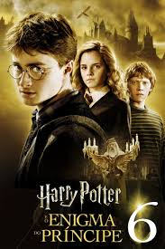

No sexto ano de Harry em Hogwarts, Lord Voldemort e seus Comensais da Morte estão criando o terror nos mundos bruxo e trouxa.

Harry Potter e o Enigma do Príncipe é o sexto livro da série Harry Potter, de J. K. Rowling. Em 24 horas, 6,9 milhões de cópias foram vendidas nos Estados Unidos, 250 mil por hora, se tornando o livro mais rapidamente vendido da história. A livraria Barnes & Noble registrou uma média de 105 cópias vendidas por segundo na primeira hora de vendas. É também o primeiro livro da série a ser menor do que seu antecessor imediato.